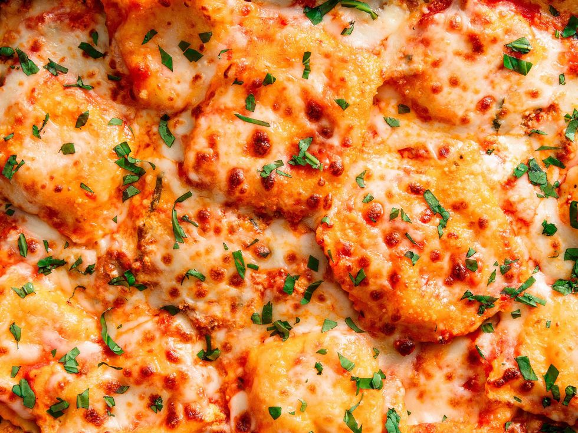

Cozy Comfort Ravioli

Ingredients
- 1 lb. ground beef
- 1/2 medium onion, chopped
- Kosher salt
- Freshly ground black pepper
- 2 cloves garlic, minced
- 1 oz. (32-oz.) jar marinara
- 16 oz. whole milk ricotta
- 1 large egg
- 1 c. freshly grated Parmesan, divided
- 1/4 c. freshly chopped basil, plus more for garnish
- 1 tsp. garlic powder
- 2 oz. (12-oz.) packages frozen cheese ravioli
- 2 c. shredded mozzarella
Preheat oven to 350º and grease a 9”-x-13” baking dish with cooking spray. Warm a large, nonstick skillet over medium heat and add ground beef and onion. Season with salt and pepper and cook until beef is browned and onion is soft, about 10 minutes, then drain fat and return to skillet. Stir in garlic and marinara, then reduce heat and simmer for flavors to meld, 5 minutes.
Meanwhile, in a medium bowl, add ricotta, egg, 1/4 cup Parmesan, basil, garlic powder, and season with salt and pepper. Stir to combine.
Spread 1/3 of the meat sauce into prepared pan. Top with a single layer of ravioli, half of the remaining meat sauce, half of the ricotta mixture, and half of the mozzarella and remaining Parmesan. Repeat layers, ending on cheeses.
Cover pan loosely with aluminum foil and bake for 30 minutes. Remove foil and bake until golden and bubbly, 15 minutes more. Sprinkle with remaining basil and serve.